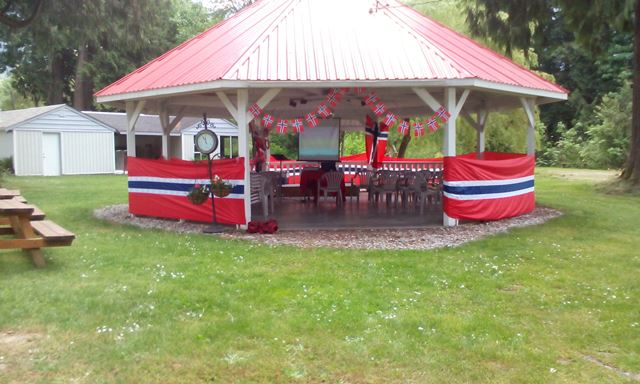

Heritage Camp

History: The camp has been running for over 30 years and each year it gets a little bit better! The original camp, under Camp Directors Helen and Mervin Rogelstad, featured classes in Woodcarving, Rosemaling, and Hardangersøm. A children's program offered activities for children 12 and under, as well as activities for the entire camp including; Camp Olympics, a Horseshoe tournament, car rally, BBQ Dinner and pancake breakfast. Today the camp offers so much more!
Program: The application form, available online, lists the current class offerings for adults. The program for children and youth has really expanded to include classes for children ages 4 to 16 years featuring a variety of Norwegian Cultural classes including Norwegian Language. Classes are offered Thursday, Friday, and Saturday during the camp. Many other fun activities are planned from Wednesday evening until Sunday morning including a BBQ supper and pancake breakfast (all part of the registration package).
Location: Sleipner Lodge #8 has been our host for over 30 years on their beautiful property located approximately 15 minute drive north east of Mission. The address is 11901 Seux Road, Mission, BC (just off Sylvester Road). The property has excellent camping facilities for tents, motor homes and trailers. There is a large playing field, clubhouse, gazebo, swimming pool, washrooms, trails and a creek running beside the pool. There are also many private cabins owned by Sleipner Lodge members.